Tarta de fresas, chocolates y queso
Tue, 14 Feb 2012 02:03:21 PST
La palabra tarta da un poco de miedo si somos nosotros los que la vamos a hacer, pero hoy en día hay muchas facilidades, empezando por comprar la base y el bizcocho, que podría ser lo más complicado de hacer, mas alá, es echarle imaginación y saber combinar sabores, casi un juego de niños, muy [ Read More ]
La palabra tarta da un poco de miedo si somos nosotros los que la vamos a hacer, pero hoy en día hay muchas facilidades, empezando por comprar la base y el bizcocho, que podría ser lo más complicado de hacer, mas alá, es echarle imaginación y saber combinar sabores, casi un juego de niños, muy dulce y que no sólo sirve para fiestas de cumpleaños de niños, una tarta, es siempre motivo de celebración, sea lo que sea y para quien sea, a si que, hoy, San Valentín, ¿qué mejor que regalaros una tarta? 
Ingredientes
- 1 paquete de bases de bizcocho (vienen 3 placas)
- 1/2 kg de fresas
- 1 tableta de chocolate blanco
- 1 tableta de chocolate negro
- 1 brick de nata
- 1/2 tarrina de queso philadelphia
- 200 gr de azúcar
- 16 galletas hojaldradas
- 1 chorrito de jerez (o calquier licor al gusto rebajado con agua)
-
Preparación
Lo primero de todo es preparar los ingredientes, así montar la tarta será muy rápido.
Hay que lavar y cortar las fresas en láminas finitas. Cuando las tengáis listas apartarlas y poner al baño maría dos cuencos, uno con el chocolate blanco y otro con el chocolate negro, como tardaran un rato en derretirse podéis ir preparando la masa que va a envolver la tarta, para ello mezclar media tarrina de queso estilo philadelphia y 3 cucharadas grandes de azúcar. Si el queso esta muy frío y os cuesta mezclarlo podéis calentarlo unos segundos en el microondas.
Con todos los ingredientes listos, sólo tendremos que montar la tarta, la primera capa y como base pondremos unas 8 galletas hojaldradas en un circulo que tenga más o menos el mismo diámetro que el bizcocho que hemos comprado. Sobre esta colocamos la primera capa de bizcocho y la mojamos con un chorrito de jerez o del licor que tengáis en casa rebajado con agua, después colocamos las fresas sobre toda la placa, cubriendo bien todos los huecos. Cuando este listo cubrir las fresas con el chocolate blanco y colocar encima la siguiente placa de bizcocho.
El segundo piso de la tarta es igual, pero en vez de usar chocolate blanco utilizaremos el chocolate negro y taparemos con la última lámina de bizcocho.
Llegado hasta este punto tenemos la parte principal de la tarta lista, os la podríais comer así o cubrirla de chocolate o nata al gusto pero nosotros hemos decidido ir un paso más allá y le hemos añadido una última capa de galletas hojaldradas como la que hemos puesto como base y para terminar la hemos pringado y recubierto entera con la mezcla de queso y azúcar pero como nos parecían pocas calorías la hemos decorado con nata montada
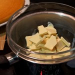
-
Resultado
Fría es cuando está más buena, después de tres horas en el frigorífico. Llena mucho, así que con una porción tendréis suficiente para llenaros. Por supuesto, muchos de los ingredientes como os decía al principio, son intercambiables, lo que importa es quitarse el miedo a hacer una tarta, experimentar, saborear y compartir ese momento de hacer la tarta y comerla en familia, con amigos o con tu pareja. Dulce provecho.
Tiempo: 20 minutos
Dificultad: 2/5
Digestión: 4/5
Precio: 6 €
Receta de Ensalada China
Wed, 08 Feb 2012 22:02:12 PST
Con esta cierro el ciclo “Asia, qué buena estás! ” de estas semanas con otra receta infalible que no puede faltar en un buen menú chino. Hoy toca: Ensalada china. Como la ensalada en sí misma no tiene mucho misterio, además de la receta os traigo una curiosidad sobre un ingrediente típico de esta ensalada, [ Read More ]
Con esta cierro el ciclo “Asia, qué buena estás! ” de estas semanas con otra receta infalible que no puede faltar en un buen menú chino. Hoy toca: Ensalada china.
Como la ensalada en sí misma no tiene mucho misterio, además de la receta os traigo una curiosidad sobre un ingrediente típico de esta ensalada, que quizá sea el ingrediente más raro que lleva: el agar-agar.
El agar-agar son esas tiritas medio transparentes y gelatinosas que siempre trae la ensalada china, seguro que sabeis a qué me refiero. En realidad el agar-agar es una gelatina natural de origen vegetal marino. Es incolora, inodora e insípida.
Entonces, si no sabe a nada ¿para qué la echan? -os preguntareis- Y yo os respondo encantada, mis pequeñuelos : el agar-agar tiene un gran poder gelificante y por ello una asombrosa capacidad de absorción de líquidos (puede absorber hasta 300 veces su peso!!). Por este motivo se usa en cocina como gelificante, como estabilizante e incluso como espesante. Aunque ninguno de estos usos parece muy útil en una ensalada ¿verdad?… entonces, ¿para qué la ponen? … Pues gracias a ese poder de absorción de líquidos el cometido del agar-agar en la ensalada es el de recoger el agua que sueltan las verduras por si mismas y en especial tras su lavado, y de esta manera conservan mucho mejor su textura crujiente hasta el momento de degustarlas. Son listos los chinos, ¿eh?
El agar-agar se encuentra cada vez más fácilmente en tiendas especializadas en comida asiática y también en herbolarios y tiendas de alimentación vegeteriana, ya que es una forma de hacer gelatina apta para veganos.
Nunca te acostarás sin saber una cosa más! Y después de esta leccioncilla que os servirá para tiraros el rollito delante de vuestros amigos en la próxima visita al chino, pasamos por fin a la receta.
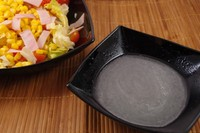
Ingredientes
Para la ensalada (ya sabeis que podeis poner o quitar lo que querais)
Lechuga
Tomate (o tomatitos cherry)
Cebolla
Jamón york
Maíz
Zanahoria rallada
Agar-agar
Para la salsa
1 cucharada sopera de aceite de girasol
30 ml. de vinagre de vino blanco (de vino o de manzana)
25 ml. de zumo de limón
50 gr de azúcar
Una pizca de sal
Preparación
Hace falta que explique cómo se hace una ensalada??? Supongo que no… pero por si acaso, no te olvides de lavar y escurrir bien todas las verduras antes de partirlas y echarlas a la ensaladera.
Para preparar la salsa, símplemente mezcla los ingredientes y dale un poco de rock’n'roll con la batidora. Nada, unos segundillos serán suficientes.
Vierte la salsa sobre la ensalada y revuelve bien. Ya tá!
Resultado
Otra receta china china.
Con esta ensalada, el cerdo agridulce de la semana pasada y el pollo al limón de la anterior, si te estiras un poquito la raya del ojo, te montas el restaurante en un periquete.
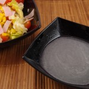
Tiempo: 10 minutos
Dificultad: 1/5
Digestión: 1/5
Precio: 1 €
Tagliatelle alla Amatriciana
Sun, 05 Feb 2012 22:02:04 PST
Hoy os traigo una de las recetas típicas italianas que más me gustan. Lo habréis visto muchas veces en restaurantes italianos, otra cosa es que lo pidáis porque el nombre no os dice mucho, que puede pasar. La pasta a la Amatriciana bien hecha es uno de los mayores placeres gastronómicos que conozco. Yo [ Read More ]
Hoy os traigo una de las recetas típicas italianas que más me gustan. Lo habréis visto muchas veces en restaurantes italianos, otra cosa es que lo pidáis porque el nombre no os dice mucho, que puede pasar. La pasta a la Amatriciana bien hecha es uno de los mayores placeres gastronómicos que conozco. Yo esta vez lo he hecho con tagliatelle, y el resultado no ha podido ser mejor, la verdad. ¡Mirad que pintaza!
Ingredientes (para 3 personas)
- 300 gramos de tagliatelle (o tallarines)
- 1/2 cebolla grande
- 3 tomates (o 300 gramos de tomate triturado)
- 100 gramos de bacon o panceta
- 1/2 guindilla
- aceite
- pimienta y sal
Preparación
Es una receta que si la queremos hacer bien, es decir como mandan los cánones italianos, no es precisamente una receta rápida, aunque en realidad, y aunque el resultado no sea el mismo, se puede hacer en menos tiempo, en vuestras manos lo dejo, pero yo, desde luego, os voy a enseñar el camino largo y auténtico.
Lo primero de todo va a ser cortar la cebolla en rodajas finas y el tomate en dados (una vez pelado y despepitado). Igualmente, si tenemos el bacon o la panceta en lonchas, os recomiendo cortarlo en pequeños rectángulos.
Ahora untamos bien la sartén en aceite, y con esto quiero decir que no tenemos que poner mucho aceite, si no tan sólo para que cubra toda la superficie de la sartén. Freímos el bacon hasta que suelte toda la grasa, a fuego lento, y entonces es cuando añadimos la cebolla. Bajamos aún más el fuego, al mínimo. Serán 10 minutos más o menos lo que tarde la cebolla en rehogarse adecuadamente (removemos de vez en cuando), lo veréis que empieza a dorarse y transparentarse, como si empezara a pocharse. En ese momento tenemos que añadir el tomate, la guindilla (la desmenuzamos antes), y la pimienta y sal al gusto (echad bastante pimienta, es la clave).
Removemos de vez en cuando y seguimos con el fuego al mínimo durante otros 40 minutos. Sí, puede parecer mucho, pero lo agradeceréis con el resultado. Os aviso que es un plato bastante picante, para los que adoramos estos sabores no nos parecerá así, pero una persona poco acostumbrada al picante, puede ser algo más intenso.
Una vez pase el tiempo ya sólo quedará verterlo sobre la pasta y disfrutar de un plato 100% italiano y maravilloso. Que aproveche.
Resultado
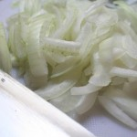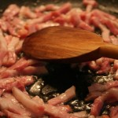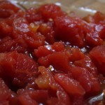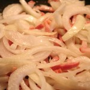Tiempo: 1 hora
Dificultad: 2/5
Digestión: 4/5
Precio: 3€
Cerdo Agridulce
Fri, 03 Feb 2012 00:30:37 PST
Continuamos con el especial “Asia, qué buena estás!”. Si la semana pasada os traíamos el archi-conocido pollo al limón, hoy os traemos la receta estrella de cualquier chino que se precio: el cerdo agridulce Hace un tiempo nuestra compañera Virgy, nos enseñó a hacer salsa agridulce. Hoy os traemos la receta completa del cerdo y [ Read More ]
Continuamos con el especial “Asia, qué buena estás!”. Si la semana pasada os traíamos el archi-conocido pollo al limón, hoy os traemos la receta estrella de cualquier chino que se precio: el cerdo agridulce
Hace un tiempo nuestra compañera Virgy, nos enseñó a hacer salsa agridulce. Hoy os traemos la receta completa del cerdo y la salsa que aunque es parecida a la de Virginia, tiene algún añadido (como el jugo de piña, que le da el toque redondo para acompañar a este plato)
Vamos allá!
Ingredientes
(para 2 ó 3 personas)
500 gr. de carne de cerdo (yo suelo usar magro ya cortado en trozos, la carne que se suele usar para guisar, pero si te apetece ponerle lomo o incluso solomillo, adelante)
Sal y pimienta al gusto
2 cucharaditas de maicena
1 cebolla
1 cucharada sopera de aceite
Una lata pequeña de piña en su jugo (esas latitas que traen 3 ó 4 rodajas)
Para la salsa
El jugo que viene en la lata de piña
50 gr. de azúcar
80 gr. de ketchup (o si lo prefieres más suave, 40 gr. de ketchup y 40 gr. de tomate frito)
15 gr. de vinagre blanco (de manzana o de vino)
20 gr. de salsa de soja
1 cucharadita de maicena para espesar (opcional)
Preparación
Empezaremos con la salsa, para tenerla lista y preparada para cuando llegue el momento.
No hay mucha ciencia, es tan sencillo como poner todos los ingredientes en un cazo y llevar a ebullición hasta que reduzca un poco y adquiera el espesor que queremos.
Seguidamente prepararemos la carne. Si no viene cortada, la cortaremos nosotros en trocitos de tamaño bocado y salpimentaremos al gusto.
Después espolvorearemos por la carne las dos cucharaditas de maicena. Yo lo hice sobre la misma tabla de cortar en donde preparé la carne, pero si ves que vas a manchar mucho, echa los trocitos de carne a un bol grande o una ensaladera, echa la harina y revuelve bien.
A continuación, en una olla o sartén amplia, ponemos a calentar el aceite y pochamos la cebolla que hemos debido cortar antes en juliana (o sea, en tiras, no hace falta picarla fino)
Con la cebolla pochada, agregamos la carne que teníamos reservada ya rebozada en la harina de maíz y removemos bien para hacer la carne.
Finalmente, añadimos las 3 ó 4 rodajitas de piña cortada en trocitos y rehogamos un poco más a fuego lento durante un par de minutos.
Por último, agregamos la salsa que teníamos resrvada y mezclamos todo bien.
Listo! Fácil y rápido! Acompáñalo con unos rollitos de primavera o un arroz tres delicias y tendrás un plato completo y chino chino
Resultado
Un plato equilibrado y delicioso. Móntate el chino en casa con nuestras recetas del especial “Asia, qué buena estás!”
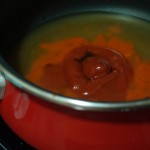 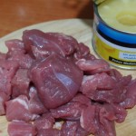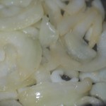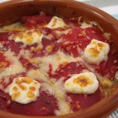
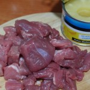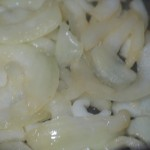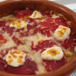
Tiempo: 30 minutos
Dificultad: 2/5
Digestión: 3/5
Precio: 3 €
Receta: Ensalada Cheeseburger
Mon, 30 Jan 2012 22:02:08 PST
El otro día tenía antojo de una hamburguesa con queso, pero no tenía pan para hamburguesa, y sin eso perdía la gracia, así que me puse manos a la obra con un nuevo invento. La ensalada Cheeseburguer. La verdad es que no las tenía todas conmigo, pero el resultado es espectacular. ¡Os enseño a hacerla! [ Read More ]
El otro día tenía antojo de una hamburguesa con queso, pero no tenía pan para hamburguesa, y sin eso perdía la gracia, así que me puse manos a la obra con un nuevo invento. La ensalada Cheeseburguer. La verdad es que no las tenía todas conmigo, pero el resultado es espectacular.
¡Os enseño a hacerla!
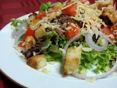
Ingredientes para 4 personas
- Una lechuga, o un poco de varios tipos (yo uso tres distintas).
- Dos tomates.
- Una cebolla morada.
- 700g de carne picada.
- Ketchup, mostaza, barbacoa (lo que más os guste).
- Queso.
- Pan duro.
- Aceite de oliva y mantequilla.
- Cebolla en polvo.
Preparación
En una sartén ponemos la carne picada, la salpimentamos y la sofreímos. Cuando esté prácticamente hecha, añadimos ketchup, mostaza o lo que queráis y revolvemos.
Cortamos la lechuga, los tomates y el pan a taquitos, y la cebolla en aros.
Empezamos a emplatar:
Ponemos debajo del todo la lechuga cortada, y en el centro ponemos un poco de nuestra carne picada. Añadimos la cebolla.
A continuación, en la misma sartén donde pusimos la carne, derretimos un poco de mantequilla y echamos el pan. Añadimos un poco de aceite y lo espolvoreamos con cebolla en polvo. Cuando esté crujiente lo ponemos en nuestro plato.
Seguimos, añadiendo el tomate, y por último rallamos un poco de queso en nuestra ensalada.
¡Ya sólo nos queda degustarla!
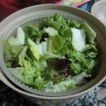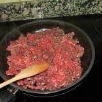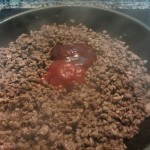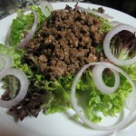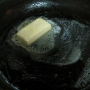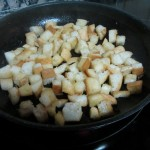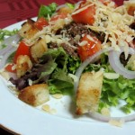Tiempo: 10 minutos
Dificultad: 1/5
Digestión: 2/5
Precio: 5€
Patatas a lo pobre: Estilo Libre
Fri, 27 Jan 2012 02:31:15 PST
No tengo nada que comer, no se que comer y no tengo mucho tiempo. Y si, se me ilumina la bombilla y además lo hace con un plato que está rico ¿puede ser eso verdad sin llamar a tu Madre o tu abuela para que te haga unas croquetas? Puede ser y se llama Patatas [ Read More ]
No tengo nada que comer, no se que comer y no tengo mucho tiempo. Y si, se me ilumina la bombilla y además lo hace con un plato que está rico ¿puede ser eso verdad sin llamar a tu Madre o tu abuela para que te haga unas croquetas?
Puede ser y se llama Patatas a lo pobre. Por el nombre de la receta ya os podéis hacer una idea de por donde van los tiros ¿no? patatas, caldito y un poco de arroz, y tan contento, ya verás ya. El invierno ya tiene rival.
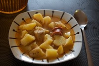
Ingredientes
- 4 Patatas limpias sin pelar
- Caldo de pollo/cocido o Agua y Una pastilla de Avecrem
- Sal, pimentón, orégano y Romero
- Dos trozos de chorizo (si tenemos y queremos)
- Medio Tomate grande (si tenemos y queremos)
- Medio vaso de arroz (Si nos apetece)
.
Preparación
Calentamos el agua con las pastillas de avecrem o el caldo. Mientras tanto, cortamos las patatas, con la piel y todo si son de las lavadas. Procuramos abrir un corte y romper el gajo, no cortarla en trozos. Todos los trozos del mismo tamaño para que tarden los mismo en cocinarse. Esperamos a que hierva el caldo. Una vez rompa a hervir, echamos los trozos de chorizo, las patatas y el medio tomate que le va dar un toque final de sabor muy bueno. Añadimos el pimentón al gusto, un poco de orégano y una pizca de romero, sin pasarse que da mucho sabor.
La sal la dejaremos para el final ya que tanto el avecrem como el caldo de pollo o cocido ya vienen salados. Ponemos la tapa, bajamos el fuego al medio/mínimo y dejamos que se hagan las patatas. Estarán cuando ya no estén duras. Si vamos a echar algo de arroz para darle más consistencia al plato, tan sencillo, como un poco antes de que estén listas las patatas aún duras, echar el medio vaso de arroz y esperar a que se termine de hacer todo. Servir y comer con deleite.
Resultado
Un plato que se prepara en apenas 30 minutos y que en su versión o expresión mínima sólo necesitaría de patatas y arroz, o sólo patatas. Sencillo, muy nutritivo pero a la vez sin ser pesado para el estómago y perfecto para comer con cuchara y en caliente en estos días de invierno. Te sacará de más de un apuro y te sorprenderá como con tan poco se puede hacer tanto.
 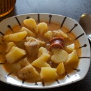
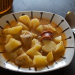
Tiempo: 35 minutos
Dificultad: 1/5
Digestión: 2/5
Precio: 2,5 €
Trufas de chocolate
Tue, 24 Jan 2012 22:02:49 PST
Ahí va una de esas recetas de Cociniños de taller de cocina de tarde de fin de semana que no sabéis qué hacer y os apetece algún plan diferente. Pero bueno, ya conocéis esta sección, en la que en recetas como estas hay que mancharse las manos y esta vez hablamos de manchárselas muuuuucho, para disfrutar de la [ Read More ]
Ahí va una de esas recetas de Cociniños de taller de cocina de tarde de fin de semana que no sabéis qué hacer y os apetece algún plan diferente. Pero bueno, ya conocéis esta sección, en la que en recetas como estas hay que mancharse las manos y esta vez hablamos de manchárselas muuuuucho, para disfrutar de la elaboración!! Si estáis listos, vamos a ello!
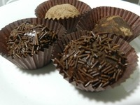
Ingredientes:
375 gr. de chocolate de cobertura (sino podéis usar el que es especial para repostería)
3 cucharadas de leche condensada
200 ml. de nata líquida para cocinar (un brick pequeño)
2 cucharadas de mantequilla
cacao en polvo o fideos de chocolate (para adornar)
Preparación:
Ponemos en una cacerola pequeña la leche condensada, la mantequilla y la nata. Lo dejamos a fuego lento, sin dejar de mover la mezcla hasta que hierva. Retiramos del fuego y dejamos que se temple.
Después ponemos a derretir el chocolate con mucho cuidado de que no se queme por debajo (si quereis podéis hacerlo al baño María y así evitáis riesgos).
Unimos la primera mezcla con el chocolate y lo echamos en una bandeja plana, ya que debe endurecerse y cuanto más fina dejemos la mezcla antes lo conseguiremos. Metemos la bandeja en el congelador una hora aproximadamente.
Cuando haya pasado el tiempo empieza la parte de mancharse las manos. Como si estuviéramos jugando con plastilina, con la ayuda de una cucharita cogemos masa y hacemos bolitas haciendo círculos en las palmas de las manos. Cuando tengamos todas las trufas hechas las envolvemos en el cacao o en los fideos de chocolate y vamos poniéndolos en papeles individuales (más pequeños que los de magdalenas). Dejamos enfriar de nuevo en la nevera y ya tenemos nuestras trufas de chocolate hechas!
Aviso importante: abstenerse los contrarios al chocolate!!
Resultado:
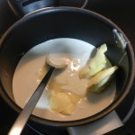![DSCN4569[1]](DSCN45691-150x150.jpg "DSCN4569[1]") 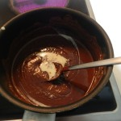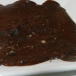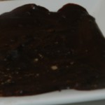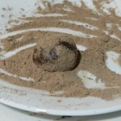
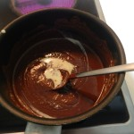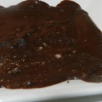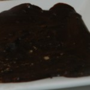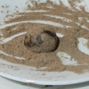Tiempo: 20 minutos +1h. de nevera
Dificultad: 1/5
Digestión: 4/5
Precio: 5 €
Cociniños – Mini banana split
Sun, 22 Jan 2012 22:02:47 PST
La receta de hoy es para mayores y pequeños. Porque ¿quién se puede resistir a esta monada de postre? Ya sabéis: ¿Que queréis sorprender a unos amigos sin mucho esfuerzo? Pues a preparar estos mini banana split, que se hacen en un momento y con ellos tendréis un “Uaaaau” asegurado. ¿Que los pequeñajos quieren participar [ Read More ]
La receta de hoy es para mayores y pequeños. Porque ¿quién se puede resistir a esta monada de postre?
Ya sabéis: ¿Que queréis sorprender a unos amigos sin mucho esfuerzo? Pues a preparar estos mini banana split, que se hacen en un momento y con ellos tendréis un “Uaaaau” asegurado. ¿Que los pequeñajos quieren participar en el menú? Pues ponles a hacer esta receta, que viendo las fotos la pueden hacer casi sin ayuda.
Ingredientes para 4 unidades
1 plátano que no sea de Canarias ni esté muy maduro, lo más recto posible
6-8 onzas de chocolate
Guindas
Bolitas de colores de azúcar
Nata en spray
Preparación
Le quitamos los dos picos al plátano y lo cortamos en 4 trozos iguales.
Ponemos el chocolate en un recipiente pequeño y lo derretimos en el microondas, vigilando cada 20 segundos hasta que esté líquido. Preparamos en otro recipiente pequeño una buena cantidad de bolitas de colores.
Mojamos cada trozo de plátano en el chocolate (cuidado aqui con los nenes ¡que quema!), eliminamos el exceso con el reverso de una cuchara, sobre todo por abajo, y justo después lo metemos en el recipiente de las bolitas. Si se escurre podemos agarrarlo usando un trocito de papel de cocina. Hacemos todo con todos los trozos de plátano y los metemos en el congelador durante 5 minutos.
Sacamos del congelador pasados los 5 minutos, echamos nata por encima y decoramos con una guinda. ¡Listo!
Resultado
No es que sean lo más bueno del mundo. Son simplemente plátano con chocolate y nata, pero son un espectáculo visual y la receta es facilísima.
Me diréis que el banana split lleva helado. Pues sí, la receta original de este blog los rellena, pero sigo pensando que es mejor la apariencia que el sabor así que no creo que merezca demasiado la pena el esfuerzo.
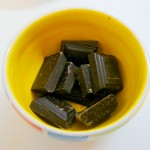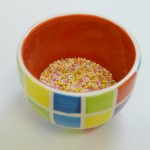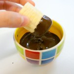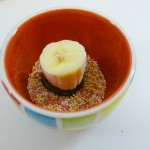
Tiempo: 10 minutos
Dificultad: 1/5
Digestión: 2/5
Precio: 2 €
Cupcakes de Cerveza Guinness con Frosting de Queso
Thu, 19 Jan 2012 01:16:54 PST
La receta de hoy es una auténtica pasada, os lo digo yo que os escribo mientras me como una de estas delicias. Está basada en una tarta cuya autoría pertenece a Nigella Lawson, una increíble y mediática cocinera británica (a la que a lo mejor conoceis gracias a que aconsejamos muy bien a los Reyes [ Read More ]
La receta de hoy es una auténtica pasada, os lo digo yo que os escribo mientras me como una de estas delicias. Está basada en una tarta cuya autoría pertenece a Nigella Lawson, una increíble y mediática cocinera británica (a la que a lo mejor conoceis gracias a que aconsejamos muy bien a los Reyes Magos y os han regalado algún libro suyo). De entre las muchísimas recetas que ha publicado, esta es una de las más conocidas y de las que más vueltas ha dado gracias a los blogs gastronómicos. Hoy nosotros aportamos nuestro granito de arena también.
Ya sé que hemos dejado las navidades atrás hace muy poco y que a lo mejor estais saturados de dulces (mira que sois raritos, porque yo no me canso!!), pero algo había que hacer porque estas semanas hemos estado de celebraciones cumpleañeras y no podía dejarlo pasar Antes de ayer fue el cumple de Juanma, el boss de los Cocinillas y hace una semana fue el mío también.
Siendo el cumpleaños tan cercano a los empachos navideños, cada año me gusta menos preparar tartas; siempre sobra algún trozo que se empadrona en tu frigorífico, quedándose seco y esperando tu peor momento de debilidad. Por eso, ¿¿qué mejor que reconvertir una pesada tarta en estos deliciosos cupcakes individuales?? Te comes uno, te quedas tan a gusto y si sobran, los puedes compartir con tus compañeros de la oficina por ejemplo. Una ración de tarta, jugosa y perfecta, con ese toque tan chic que tienen los cupcakes.
Ingredientes
(para unos 24 cupcakes)
Para los muffins
250 ml. de cerveza Guinness
250 gr. de mantequilla a temperatura ambiente
250 gr. de harina de repostería o de trigo normal
400 gr. de azúcar
80 gr. de cacao en polvo (sin azúcar, el más puro que puedas encontrar, yo uso de la marca Valor)
4 cucharaditas de impulsor químico (“levadura Royal”)
1 cucharadita de bicarbonato sódico
140 gr. de nata líquida para montar (sin montar)
2 huevos
1 cucharadita de extracto de vainilla
Para el frosting
200 gr. de nata para montar
200 gr. de queso fresco tipo Philadelfia (tiene que ser normal, no vale el light)
120 gr. de azúcar glass (mejor si es comprada que hecha en casa)
Preparación
Lo primero, como siempre, precalentar el horno; esta vez a 180º
Continuaremos poniendo a fuego medio-bajo la mantequilla y la cerveza (ojo al abrir la botella o la lata, que esta cerveza tiene espuma como para hacer una fiesta en Pachá). Remueve bien y cuando veas que la mantequilla se ha derretido y la cerveza se ha integrado, retira del fuego y deja enfriar.
Mientras, debemos mezclar y tamizar los ingredientes secos (harina, azúcar, cacao, bicarbonato e impulsor químico) para asegurarnos de que no hay “bolas de polvo”. Si tienes un robot de cocina, genial, mezcla todos los ingrentes y “tritura” a la velocidad más alta que tenga durante unos segundos. Si no tienes robot de cocina, utiliza un tamiz o un colador para deshacer los posibles pegotes. Reserva.
En un bol grande, batimos la nata, la vainilla líquida y los huevos (cuando digo que batamos la nata me refiero a que la integremos con el resto de ingredientes, no hace falta montarla). Añadimos la mezcla de cerveza y mantequilla y mezclamos bien. Finalmente, vamos integrando los ingredientes secos poco a poco. Echamos un poquito y batimos, otro poquito y seguimos batiendo. Lo ideal es echar los ingredientes secos en unas 5 tandas.
Ya tenemos la masa de los muffins; como verás es bastante más líquida que cualquier otra masa de bizcocho por lo que habrá que tener especial cuidado con ella. Es INDISPENSABLE que para rellenar las cápsulas de magdalena tengas un molde de magdalenas que haga de contenedor. Esto es necesario para casi cualquier magdalena o muffin, pero es que con esta masa tan líquida es VITAL. No se te ocurra echar la masa directamente en el papelillo porque se va a desparramar todo. De hecho, si tienes oportunidad de hacerte con unas cápsulas semi-rígidas como las que se ven en mis fotos, mejor que mejor. Estas cápsulas son perfectas porque no necesitan molde y al ser más duritas, aún cuando la masa sea muy grasa, no pierden el color ni se quedan feas tras el horneado; lo aguantan todo! Lo malo es que sólo las venden en tiendas especializadas en repostería.
Si no tienes cápsulas semi-rígidas y tampoco tienes molde específico para magdalenas o muffins, entonces puedes usar flaneras, incluso de esas que venden de aluminio de usar y tirar que venden en todos los supermercados.
Una vez tenemos la cápsula preparada dentro de su molde, vertemos la masa dentro. Esta masa sube, así que yo aconsejo rellenar las cápsulas sólo hasta la mitad, si quieres un poquito más pero nunca más de ¾ partes
Horneamos durante unos 15 minutos a 180º (ya sabes que cada horno es un mundo, píllale el tranquillo al tuyo y adapta la temperatura o el tiempo si lo ves necesario)
Listo! Ya tenemos nuestras muffins. Comprueba que están bien hechas pinchando un palillo en el centro, si sale limpio es que están perfectas, si sale manchado de masa, le falta tiempo, temperatura o ambas.
Si has utilizado la misma cantidad de ingredientes que pongo seguramente podrás hacer otra hornada más. Puedes reducir los ingredientes a la mitad si quieres para que salga sólo una docena, pero yo lo hice así porque quería gastar todo el bote de Guinness, nadie se iba a beber lo que sobrara y me daba pena tirarlo 
Mientras los muffins se enfrían, vamos a preparar la cobertura o frosting, en este caso un frosting de queso que es una auténtica debilidad para mi, está tan bueno que me lo como a cucharadas… a lo mejor es interesante echar un tercio más de ingredientes para suplir lo que te vayas a comer antes de decorar… jejeje
Monta por un lado la nata. Por otro lado, en un bol mezcla el queso con el azúcar glass (es mejor que sea industrial y no hecho en casa para que no se note nada la textura). Una vez tienes la mezcla, añade la nata montada con una espátula y movimientos envolventes, para que no se desmonte.
Cuando los muffins ya estén totalmente fríos, decoramos con la crema. Esto ya es cosa tuya, puedes utilizar una manga pastelera o simplemente untar un poco de frosting con una espátula. En mi caso hice de las dos maneras y para darle un toque extra, desmigué un muffin que había quedado un poco feo y lo utilice para espolvorear y decorar sobre el resto de cupcakes.
Por cierto, que como esto iba de cumpleaños, no podía faltar la decoración con velita… Pide un deseo…
Resultado
Un bizcocho buenísimo, jugoso como ningún otro, con el pequeño toque amargo de la cerveza al final que realza el sabor del chocolate, combinado con la más dulce de las cremas… si hay algo mejor que esto yo no quiero saberlo.

Tiempo: 45 minutos
Dificultad: 3/5
Digestión: 3/5
Precio: 5 €
Sopa de chocolate blanco con almendras tostadas
Mon, 16 Jan 2012 01:09:45 PST
Como capricho, como acompañante de otro dulce, solo, regando fruta, frío, caliente. La verdad es que no tengo claro ni creo que importe, para cuando o en qué situación vale esta sopa de chocolate blanco, solo puedo decir que esta riquísima y que siempre quieres un poco más. Un postre sencillo de hacer y que [ Read More ]
Como capricho, como acompañante de otro dulce, solo, regando fruta, frío, caliente. La verdad es que no tengo claro ni creo que importe, para cuando o en qué situación vale esta sopa de chocolate blanco, solo puedo decir que esta riquísima y que siempre quieres un poco más. Un postre sencillo de hacer y que vale para casi cualquier cosa y darle vida a cualquier fruta o postre seco o soso que tengamos por ahí. Además, tiene propiedades afrodisíacas….comprobado.
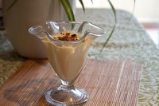
Ingredientes (para 2 personas)
1 vaso de leche
1 tableta de chocolate blanco
250ml de nata
1 yogurt natural edulcorado
1 vaina de vainilla
Almendras sin tostar
Preparación
Preparar esta receta no nos va a llevar más de 10 minutos, lo primero es poner en el fuego la leche con la nata y la vaina de vainilla. Cuando alcance su punto de ebullición bajar el fuego y añadir la tableta de chocolate sin dejar de remover para que se mezclen bien todos los ingredientes.
Después apartamos la mezcla del fuego y la dejamos enfriar al menos una hora, pasada esta hora retiraremos la vaina de vainilla y batiremos la mezcla con el yogurt.
La sopa que nos ha quedado habrá que meterla en el frigo y dejarla como poco 4 horas.
Para terminar picamos con un cuchillo unas cuantas almendras y las tostamos 5 minutos en una sartén hasta que estén doraditas. Servimos la sopa en copas o en un plato hondo y le añadimos las almendras por encima para decorar.
Consejos: podéis acompañar la sopa con cualquier cosa, en vez de almendras podéis rallar un poco de chocolate negro y añadirlo por encima, piñones o pequeños frutos rojos como arándanos o frambuesas.
Resultado
Después de fría suele quedarse una capa de chocolate encima, que habrá que remover para volver a ligar con el resto de la salsa o sopa. Como decía al principio, es ideal para acompañar y revitalizar cualquier postre o dulce. Por supuesto también puede ser con chocolate con leche o negro. A disfrutarlo, pero sin pasarse que es adictivo.
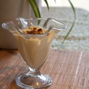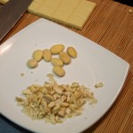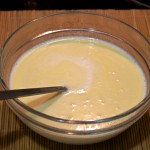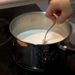Tiempo: 10 min de cocción. 4 horas en el frigorífico
Dificultad: 1/5
Digestión: 2/5
Precio: 3 euros
Receta de Nasi Goreng: Arroz típico de Malasia
Fri, 13 Jan 2012 01:59:41 PST
Si hay un plato de indonesia que en Europa está popularizado, ese es el Nasi Goreng. En realidad nasi goreng significa literalmente arroz frito, pero el plato es conocido como una receta elaborada con uno de los sabores más característicos de Asia. Como os podéis imaginar la variedad de formar de preparar el Nasi Goreng [ Read More ]
Si hay un plato de indonesia que en Europa está popularizado, ese es el Nasi Goreng. En realidad nasi goreng significa literalmente arroz frito, pero el plato es conocido como una receta elaborada con uno de los sabores más característicos de Asia. Como os podéis imaginar la variedad de formar de preparar el Nasi Goreng es enorme, pero hoy os vamos a enseñar una que no os dejará indiferentes.
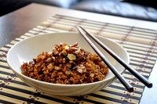
Eso si, os recuerdo, como con todas las recetas asiáticas en las que metemos chile, cada uno que eche a su gusto, ya que el picante es algo muy personal, y para los que no les guste puede destrozar por completo un plato. Las cantidades que indico en esta receta son para los que les guste bastante picante y aguanten bien, así que básate en eso.
Ingredientes
- 2 chalotas o una cebolla
- 1 chile fresco
- Jengibre fresco
- Cilantro
- Pimentó dulce
- 1 zanahoria
- Salsa de soja
- Kétchup
- Arroz
Preparación
Lo primero que tenemos que hacer es cortar las chalotas (o si no tenemos la cebolla) en cuadraditos pequeños y freirlos hasta que queden bien doraditos. De hecho lo suyo es dejarlos crujientes. Una vez estén listos los sacamos y los dejamos con papel de cocina para quitar el aceite sobrante.
Calentamos 3 cucharadas de aceite de oliva (aunque lo ideal es de cacahuete) y echamos una cucharada de jengibre, una de cilantro bien picado, el chile en rodajas y una cucharadita de pimentón dulce. Tenemos que removerlo rápido y tenerlo menos de un minuto, para que no se queme. En seguida añadimos una zanhoria rallada en trozos grandes y seguimos moviendo, que vaya mezclándose todo.
Ahora echamos una cucharada de salsa de soja y una de kétchup (este es el truco) y removemos todo bien. Añadimos el arroz ya cocido y subimos el fuego para que este se fría. Podemos por ejemplo añadir unas gambas o pollo frito, le da un toque extra para completar este plato, aunque a mi me encanta solo.
Cuando veamos que todo se ha mezclado bien y el arroz se ha frito ligreramente estará listo.
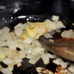 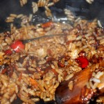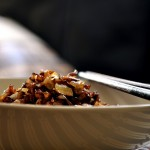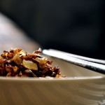
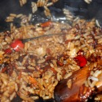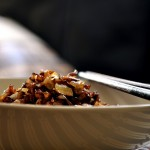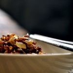Tiempo: 15 minutos
Dificultad: 3/5
Digestión: 2/5
Precio: 3€
Cociniños: empanada de atún con masa de hojaldre
Tue, 10 Jan 2012 22:07:13 PST
Hoy los peques van a necesitar de un poquito más de ayuda de los mayores que de costumbre, ya que vamos a usar el fuego y el horno, pero el resto lo pueden hacer ellos. Y es que es tan rápido y fácil que mientras los mayores hacen una cosa los niños puedes hacer otra [ Read More ]
Hoy los peques van a necesitar de un poquito más de ayuda de los mayores que de costumbre, ya que vamos a usar el fuego y el horno, pero el resto lo pueden hacer ellos. Y es que es tan rápido y fácil que mientras los mayores hacen una cosa los niños puedes hacer otra y en un santiamén tener una señora empanada, ideal para meriendas y cenas.
Ingredientes:
1/4 de cebolla mediana
400 gr. de tomate triturado (un bote pequeño)
400 gr. de atún (una lata grande)
2 láminas de masa de hojaldre
2 cucharadas de aceite de oliva
1 huevo
sal
azúcar
Preparación:
Los mayores ponen el aceite a calentar en una sartén y mientras pican la cebolla (cuanta más pequeña mejor). Cuando está ya caliente, a fuego lento hacemos la cebolla hasta que empiece a estar transparente. Entonces añadimos el tomate y el atún troceado con una pizca de sal y otra de azúcar para quitarle el amargor del tomate. Dejamos a fuego lento durante unos 5-10 minutos y dejamos que se temple.
Mientras los peques, extienden con la ayuda de un rodillo, en una superficie plana enharinada, las dos láminas de hojaldre (si está congelada, dejar unos minutos a temperatura ambiente y estirar con cuidado de que no se rompa). La tapa que va a ir abajo debe ser más grande que la de arriba. Cuando terminen van batiendo el huevo para echárselo a la tapa de arriba para que quede dorada.
Y ya juntos padres/madres e hijos, sobre la bandeja del horno ponemos el relleno en la tapa de abajo dejando un borde para luego cerrar la empanada. Ponemos la tapa de arriba y cerramos o con un tenedor (como las empanadillas) o con la mano haciendo un borde. Con un pincel de cocina ponemos el huevo batido por encima para que quede dorado. Lo hacemos directamente sobre la bandeja porque el hojaldre es muy endeble y el relleno pesa mucho y se puede romper. Para que no se pegue siempre recomiendo que uséis papel vegetal para horno, no se pega la comida y es mucho más limpio.
Metemos en el horno 20-25 minutos y ya a gusto se come caliente o dejamos enfriar. De cualquier manera está muy riquísima, aunque a mi personalmente el hojaldre lo prefiero frío.
Resultado:
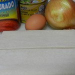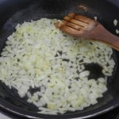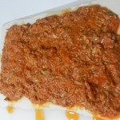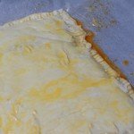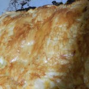Tiempo: 15 minutos+ 25minutos de horno
Dificultad: 2/5
Digestión: 3/5
Precio: 6€
Receta: Paquetitos de pasta brick
Sun, 08 Jan 2012 00:09:02 PST
Una de las cosas que menos me gustan de la Navidad, es que siempre compro mil ingredientes para hacer mil platos distintos y luego la mitad acaba sin hacerse, porque como siempre, he planificado una cena para 80 en vez de para 12. Da igual que pasen años y años, siempre me pasa igual. Por [ Read More ]
Una de las cosas que menos me gustan de la Navidad, es que siempre compro mil ingredientes para hacer mil platos distintos y luego la mitad acaba sin hacerse, porque como siempre, he planificado una cena para 80 en vez de para 12. Da igual que pasen años y años, siempre me pasa igual.
Por eso,cuando acaban las comidas y cenas familiares, me toca ponerme a vaciar la nevera de todo lo que he comprado.
Ésta vez, al ver qué tenía, me vino a la cabeza una receta que hacía la madre de mi amigo, pero que he modificado añadiendo un par de cosas más.
Os la voy a enseñar:
Ingredientes para 5 personas
- 10 hojas de pasta brick
- 20 dátiles
- 1 rulo de queso de cabra
- Jamón serrano a taquitos
- 1 berenjena
- Salsa de soja
Preparación
En primer lugar, cortamos la berenjena a rodajas finitas y las freímos en abundante aceite.
Mientras se van friendo, quitamos los piñones a los dátiles y los abrimos y cortamos a rodajas el queso de cabra.
En el centro de una hoja de pasta brick ponemos 4 rodajas de berenjena, 2 de queso de cabra, un poco de jamón y dos dátiles, y echamos una cucharadita de salsa de soja.
Cerramos el paquete como veis en las fotos y lo sujetamos con un palillo.
Doramos nuestros paquetitos y sacamos el palillo.
¡Ya sólo nos queda emplatar!
Resultado
Como podéis comprobar, es un plato muy rápido y fácil de hacer. La combinación del dulce de los dátiles y la salsa de soja, con el salado del queso, o el jamón le dan un toque especial que hará que más de uno se chupe los dedos 
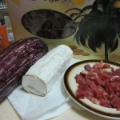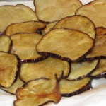![IMG_0492 [paquetitos pasta brick]](IMG_0492-paquetitos-pasta-brick-150x150.jpg "IMG_0492 [paquetitos pasta brick]") 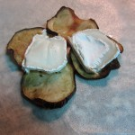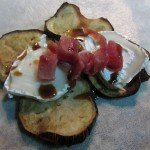
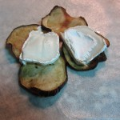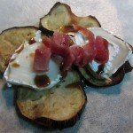![IMG_0499 [paquetitos pasta brick]](IMG_0499-paquetitos-pasta-brick-150x150.jpg "IMG_0499 [paquetitos pasta brick]")
Tiempo: 25 minutos
Dificultad: 2/5
Digestión: 4/5
Precio: 4€
Arroz con jengibre y frutos secos
Sat, 11 Feb 2012 22:02:06 PST
Uno de los recursos que más a mano tenemos los Cocinillas son las pastas y el arroz, ya que se preparan fácil, rápido y uno no ensucia demasiado cocinándolos. Por eso son un alimento al que recurrimos a menudo, cuando hay poco tiempo y preparar un buen plato no es prioritario. Sin embargo la pasta [ Read More ]
Uno de los recursos que más a mano tenemos los Cocinillas son las pastas y el arroz, ya que se preparan fácil, rápido y uno no ensucia demasiado cocinándolos. Por eso son un alimento al que recurrimos a menudo, cuando hay poco tiempo y preparar un buen plato no es prioritario.
Sin embargo la pasta y el arroz no se limitan a tomate frito y una carbonara como tope de gama. Hay muchísimos alimentos que combinan aquí y que pueden darle un valor extra a tu plato muy interesante. Hoy vamos a preparar un arroz con jengibre y frutos secos que está de muerte.
Ingredientes
- Arroz
- Jengibre
- Frutos secos (almendra, avellana, cacahuete, anacardo y pistacho)
- Una guindilla
- Salsa de soja, ketchup y salsa de ostras
Preparación
Esta es una receta extremadamente sencilla. Lo primero será cocer el arroz y dejarlo preparado. A continuación ponemos un poco de aceite a calentar y rallamos jengibre a gusto. El sabor del jengibre es peculiar, y en España no estamos demasiado acostumbrados, así que ten cuidado de no pasarte porque la típica reacción es que el plato sabe a perfume.
Salteamos medio minuto con la guindilla troceada (cuidado también aquí no te pases con el picante) y añadimos un chorro de soja, de ketchup y una cucharada grande de salsa de ostras. Lo removemos y mezclamos bien. En este momento podemos añadir una punta de pimentón dulce, que le da un toque interesante.
Si se nos queda muy pastosa la mezcla tendremos que añadir agua para que no quede una masa. Machacamos los frutos secos, los echamos a la sartén y movemos todo. Por último añadimos el arroz y mezclamos.
¡Ya está listo para disfrutar!

Tiempo: 15 minutos
Dificultad: 2/5
Digestión: 2/5
Precio: 2 €
Cociniños: Flamenquines
Tue, 07 Feb 2012 22:02:15 PST
Para hoy me gustaría compartir con vosotros una comida típica andaluza, ya que tiene un significado especial para mi y es que aunque practicamente sólo de nacimiento, soy de allí y como no me gusta ni la pipirrana, ni el gazpacho, … pues puedo decir que éste es mi plato típico preferido de los sures [ Read More ]
Para hoy me gustaría compartir con vosotros una comida típica andaluza, ya que tiene un significado especial para mi y es que aunque practicamente sólo de nacimiento, soy de allí y como no me gusta ni la pipirrana, ni el gazpacho, … pues puedo decir que éste es mi plato típico preferido de los sures españoles.
Os lo cuento tal y como las vecinas de mi madre, hace ya unos añitos, se lo enseñaron a ella, cuando llegó a Jaén desde la capital. Sé que hay otras formas de hacerlo, ya que por ejemplo en Cádiz lo he comido de forma diferente, pero así es como me gusta y además como es una recetas cociniños, me parece la más sencilla de hacer.
No obstante, como otras veces los niños harán una parte y los papás/mamás otra ya que hay que freirlo y además, al soltar el jugo del jamón, suele saltar bastante. Así que los nenes enrollando por un lado y los mayores friendo por otro.
No os pongo cantidades ya que varía en función de cuántos queráis hacer. Calculad para cada filete de lomo una media loncha de jamón.
Ingredientes:
Filetes de lomo de cerdo
Jamón serrano en lonchas
Pan rallado
1 huevo
Aceite de oliva (para freir)
Preparación:
En una tabla ponemos el filete de lomo y con un mortero damos golpecitos hacia los extremos para aplastar y alargar la carne. Entonces, ponemos el jamón serrano por encima cubriendo toda la carne y enrollamos. Y por último empanamos pasando el flamenquín por huevo batido y después por el pan rallado. No echéis sal, ya que el jamón serrano le va a dar el punto que necesita ni más ni menos.
En una sartén ponemos aceite a calentar y cuando empiece a salir humo comenzamos a freirlos, girándolos según se vayan tostando. Cuando los saquemos, hasta que los llevemos a la mesa lo ponemos en una plato con papel de cocina absorbente para que chupe el aceite sobrante.
Lo ideal es comérselos cuando aún están calientes, pero fríos, de un día para otro también están buenísimos.
Y ya, como siempre, solo nos queda ponernos a comer y a disfrutar de lo cocinado con los pequeños de la casa!
Resultado:
![DSCN4619[1]](DSCN46191-150x150.jpg "DSCN4619[1]")
![DSCN4627[1]](DSCN46271-150x150.jpg "DSCN4627[1]")
Tiempo: 20 minutos
Dificultad: 2/5
Digestión: 3/5
Precio: 8€ (para 4 personas)
Receta de sopa de ajo
Sat, 04 Feb 2012 07:56:27 PST
Con la ola de frío que viene del ártico estos días creo que a casi todos nos apetecería una receta como esta. Hoy vamos a cocinar la típica sopa de ajo que a mi nunca me han enseñado de hacer y hago a mi manera. El termómetro de mi ventana esta mañana marcaba 0ºC, y [ Read More ]
Con la ola de frío que viene del ártico estos días creo que a casi todos nos apetecería una receta como esta. Hoy vamos a cocinar la típica sopa de ajo que a mi nunca me han enseñado de hacer y hago a mi manera. El termómetro de mi ventana esta mañana marcaba 0ºC, y en Internet ponía que la sensación térmica era de 11 bajo cero, así que desde que me he levantado he pensado en hacer esto para comer.
Espero que os guste y os ayude a entrar en calor en estos días tan fríos.
Ingredientes
- 3 ajos
- Un poco de jamón picado
- Pan del día anterior
- Pimentón de la vera
- Agua o caldo de pollo
Preparación
Empezamos cortando los ajos en rodajas y los ponemos a freír en aceite calentándolo al fuego 7/10 hasta que estén doraditos. Un poco antes añadimos el jamón picadito para que se tueste ligeramente.
Inmediatamente retiramos del fuego y añadimos una cucharada pequeña de pimentón de la Vera y lo removemos. Esto es para que se haga un poco con el calor residual y evitar que se queme, que es lo que pasaría si lo tenemos en el fuego. Añadimos el pan, que puede ser con o sin corteza, como más nos guste y removemos para que agarre el pimentón y se junte todo bien.
Devolvemos al fuego y cubrimos todo con 1 litro de agua o caldo de carne. Subimos el fuego hasta que empiece a hervir y tampamos la olla bajando el fuego hasta que este en el hervor mínimo. Así tendrá que estar unos 20 minutos.
Una vez listo podemos romper un huevo dentro, aunque a mi me gusta tal cual, esto es a gusto del consumidor.

Tiempo: 30 minutos
Dificultad: 1/5
Digestión: 2/5
Precio: 1€
Cociniños: gominolas de zumo de frutas
Tue, 31 Jan 2012 22:02:07 PST
Hoy tocan… ¡¡¡¡¡CHUCHES!!!!! Pero sanas y naturales, para que grandes y pequeños nos podamos comer las que nos apetezcan y así sin darnos cuenta tomamos unas mini raciones de vitaminas. Y si pensabais que es muy difícil, sólo os diré que en tres sencillos pasos las tenemos listas para disfrutar. Es importante que tengáis en cuenta que el [ Read More ]
Hoy tocan… ¡¡¡¡¡CHUCHES!!!!! Pero sanas y naturales, para que grandes y pequeños nos podamos comer las que nos apetezcan y así sin darnos cuenta tomamos unas mini raciones de vitaminas. Y si pensabais que es muy difícil, sólo os diré que en tres sencillos pasos las tenemos listas para disfrutar.
Es importante que tengáis en cuenta que el azúcar que os pongo en los ingredientes es orientativo ya que dependerá del zumo, si ya tiene o no azúcar, de si es más o menos ácido y si sois más o menos golosos.

Ingredientes:
1/2 vaso de zumo (el sabor lo elegís vosotros)
6 láminas de gelatina o 1 sobre de gelatina en polvo
1 cucharada de azúcar
Azúcar para rebozar
Preparación:
En un cazo ponemos el zumo con el azúcar a calentar y antes de que eche a hervir añadimos la gelatina. Recordad que si es en láminas hay que ablandarla previamente poniéndola en remojo.
Mezclamos rápidamente para que la gelatina no se cuaje y repartimos en los moldes según gustos en capas más o menos finas. Lo ideal son moldes de silicona, pero también podéis echarlo en una cubitera o en una bandeja y luego hacer las formas con un cuchillo o cortapizas.
Dejamos en la nevera 24 horas, desmoldamos y las rebozamos en azúcar. Este último paso es opcional ya que todos hemos comido los tradicionales ositos de gominolas con y sin azúcar por fuera y de las dos formas están riquísimos. Aunque sí os recomiendo que si los rebozáis los dejéis reposar unos minutillos en la nevera para que se endurezca la capa externa.
Resultado:
Tiempo: 10 minutos + 24h. de nevera
Dificultad: 1/5
Digestión: 2/5
Precio: 2€
Especial: La importancia de un buen café
Sun, 29 Jan 2012 22:02:31 PST
¿Habéis ido a un bar a pedir un café solo? Si no dais ninguna otra indicación, ¿qué os han traído? Yo personalmente, tengo que recitar un poema para poder conseguir tomar un café más o menos en condiciones. Para preparar un buen café hay que tener en cuenta algunas consideraciones. Aunque parezca tan sencillo como [ Read More ]
¿Habéis ido a un bar a pedir un café solo? Si no dais ninguna otra indicación, ¿qué os han traído? Yo personalmente, tengo que recitar un poema para poder conseguir tomar un café más o menos en condiciones.
Para preparar un buen café hay que tener en cuenta algunas consideraciones. Aunque parezca tan sencillo como cargar el casquillo, ponerlo en la máquina y darle al botón hasta que se pare, en realidad es mucho más complejo y tiene tras su elaboración un proceso que puede variar considerablemente el resultado final.
Los amantes del café (entre los que me incluyo) seguro que coinciden en que es realmente complicado encontrar un lugar donde poder tomar un café, café. Vale, cada uno lo toma a su manera: algunos con leche, otros café largo (americano), otros lo prefieren de filtro…Sobre eso no hay nada que decir, pero sí sobre el café “clásico”, café tal cual, conocido también como “Espresso”. ¿Realmente es tan difícil tomarse un buen café? Sí y no. Vamos a charlar un poco sobre el tema, con un buen café sobre la mesa.
Pedir un café en “un bar cualquiera”
Aunque cueste creerlo, aquí en España es realmente difícil pedir un café Expresso en un “bar cualquiera” (sin ánimo de hacer ningún desprecio) y que esté realmente bueno, de eso que disfrutas de tomarte ese café. Como he comentado al principio, cada uno toma el café como más le gusta, pero creo que debería haber ciertos “estándares”, un cierto conocimiento hacia este producto por parte de los llamados “profesionales del sector”, que en la mayoría de las ocasiones son los encargados elaborarlo.
 Por supuesto que hay buenos bares donde te sirven un buen café, pero en comparación, son una minoría. La mayor parte de los bares/cafeterías te sirven algo parecido a agua sucia, amarga, con sabor a quemado, y por lo que te cobran, según en que locales de centros de ciudad, hasta 2€. En cambio podemos irnos a un bar de las afueras, o incluso de un pequeño pueblo, donde un café nos cueste 1€ o poco más y ser realmente bueno; serías capaz de recorrer la distancia que separa tu casa de ese bar solo para tomar un café. Entonces, ¿por qué si se pueden encontrar ciertos locales donde tomar un buen café, hay tan pocos? El principal motivo, o mejor dicho, los principales motivos son, según mi experiencia, el desconocimiento sobre como se prepara un café, el hecho de que quien lo prepara no le gusta el café lo suficiente y, obviamente, el dinero.
Por supuesto que hay buenos bares donde te sirven un buen café, pero en comparación, son una minoría. La mayor parte de los bares/cafeterías te sirven algo parecido a agua sucia, amarga, con sabor a quemado, y por lo que te cobran, según en que locales de centros de ciudad, hasta 2€. En cambio podemos irnos a un bar de las afueras, o incluso de un pequeño pueblo, donde un café nos cueste 1€ o poco más y ser realmente bueno; serías capaz de recorrer la distancia que separa tu casa de ese bar solo para tomar un café. Entonces, ¿por qué si se pueden encontrar ciertos locales donde tomar un buen café, hay tan pocos? El principal motivo, o mejor dicho, los principales motivos son, según mi experiencia, el desconocimiento sobre como se prepara un café, el hecho de que quien lo prepara no le gusta el café lo suficiente y, obviamente, el dinero.
Como he dicho soy un amante del café, me encanta tomar un buen café y no me importa pagar por él; el hecho de llevar una cafetería ha influido en mi percepción sobre este magnífico producto y, como fanático que soy, debo ofrecer a los clientes el mejor café de la zona (autobombo =D). Vamos a ver un poco cuales son los secretos, factores y sobretodo cuidados que influyen para la calidad final de un café:
Calidad del café, la materia prima
Primero, y obviamente parte fundamental, es la calidad del café. Ésta, al igual que todos los productos, varia mucho de un café a otro. Al igual que el vino, también hay diferentes variedades de grano de café, lo que provoca que exista una gran variedad de mezclas. Tenemos cafés 100% arábica, cafés torrefactados, mezclas…
Aquí entra la mano del productor de café (como el vino), quien hace sus mezclas y tiene su propio proceso de fabricación, donde el tueste es también una parte muy importante, ya que según se va tostanto en café, va variando sus propiedades, su sabor y sus aromas.
Según el grado de tueste, obtenemos unos granos de color marrón claro, color miel, o más oscuros y poco a poco van apareciendo los aceites propios del café que quedan adheridos a su superficie. Esos aceites le dan a los granos de café un aspecto brillante, pero hay otra “modalidad” de tueste de café, el café “torrefactado“. Este proceso se hace añadiendo una cierta cantidad de azúcar que a efectos visuales parece que el café tiene ese aceite, pero en realidad es el azúcar caramelizado. Lo que se consigue con esto es un café de peor calidad, pero que obviamente es más asequible. Y casualmente es de los cafés más usados por esta zona.
Pero no menos importante es el envase donde conservar el café una vez tostado. El mejor lugar para conservarlo es en una bolsa metalizada que lo proteja de la luz, del aire y de la humedad, envasado al vacío con atmósfera protectora y una válvula unidireccional que permita el control de los aromas pero que no deje entrar aire a la bolsa. Vamos, que un tarro de cristal o plástico no es lo suyo para conservarlo durante un largo período de tiempo.
Todos estos factores (entre otros), hacen que la calidad de la materia prima sea mejor o peor, y obviamente el precio varia. Por tanto, el primer factor que determina la calidad final es este, donde desgraciadamente la mayoría de bares escatiman y buscan siempre el café más barato.
Y hablando de materia prima, la otra parte necesaria e imprescindible para hacer el café es el agua, y es también MUY importante que sea de calidad. No saldrá igual un café hecho con agua embotellada, agua de “osmosis” o agua del grifo. Esta última opción muy usada.
El molinillo, la molienda y en gramaje
Ese cacharro que hace tanto ruido cuando vamos al bar también es realmente importante. Si queremos obtener un buen café, debemos tener un buen molinillo, y se le debe llevar un control y mantenimiento casi diario. Para empezar, es el encargado de moler el café para su uso, y aquí tenemos otro factor crítico: el grado de molido del café. No es lo mismo un molido grueso que fino. Mientras que el grueso deja un paso mayor de agua, uno fino hace todo lo contrario, por tanto, debemos encontrar el grado adecuado para cada café y, sobretodo para cada día. No es lo mismo un día de verano que uno de invierno; la humedad es distinta y por tanto se debe modificar el grado de molido según si hay más o menos humedad, y este proceso debería hacerse a diario.
Los gramos de café también son muy importantes, y dependen de la calidad inicial de éste. Generalmente, se usan entre 6-7 gramos por taza de café, aunque si es de muy buena calidad, podemos incluso usar menos cantidad, y para pesarlo se usa una balanza de precisión, que sirven para más cosas que las que muchos creen. Otro punto importante es el hecho de tener bien claro que debemos dejar el mínimo de café molido si se acaba el día, y en caso de no poder terminar del todo el dosificador, sería una buena opción poner lo que nos ha quedado molido en un tupper cerrado herméticamente y guardarlo en la nevera.

A todo esto hay que sumar que de vez en cuando se deben limpiar las cuchillas del molinillo, ya que con el tiempo van quedando restos de café y aceite que dificultan que pueda hacer bien su trabajo, y éstas (al igual que el molinillo completo) deben ser de la mayor calidad posible; con esto ganamos en que no se calientan tanto como unas más normalillas, por lo que al moler el café, éste no se “quema”, por llamarlo de alguna forma, y el dosificador al ser de mayor calidad, siempre nos dispensará la misma cantidad de café y necesitará un menor control. En cambio, uno de mala calidad, puede que en ocasiones no nos deje caer los mismos gramos de café, por lo que no obtendríamos un café como debería. Por descontado, se deben limpiar periódicamente tanto la tolva como el dosificador, al igual que pasa con las cuchillas (fresas).
La cafetera
Podemos decir que es casi el alma de un buen café, aunque como hemos visto hasta ahora, todo influye. La cafetera está formada por varias piezas o “secciones” que deben tenerse en cuenta.
Para empezar, la temperatura a la que tenemos el agua debe rondar los 90ºC para poder extraer todas las cualidades del café. Si está por debajo de esa temperatura no lograremos extraer los aromas y propiedades; en cambio, si está por encima lo que haremos es “quemar” el café, perdiendo, entre otras cosas, su cremosidad y sabor. De la misma manera debe controlarse la presión del agua, que está en torno a 9 atmósferas.
 Otra zona importante es la parte superior de la cafetera. Sobre ella debemos tener las tazas para que estén calientes y al poner el café éste no se enfríe al entrar en contacto con ella, lo que puede provocar, por ejemplo, una pérdida de crema.
Otra zona importante es la parte superior de la cafetera. Sobre ella debemos tener las tazas para que estén calientes y al poner el café éste no se enfríe al entrar en contacto con ella, lo que puede provocar, por ejemplo, una pérdida de crema.
Los brazos también tienen mucho que decir en todo esto. Es importante que estén siempre puestos en la máquina para que se mantengan calientes, los casquillos deben ser limpiados a diario (incluso un par de veces al día), y al poner la dosis de café, ésta debe ser repartida con pequeños golpes para conseguir luego un prensado uniforme, ni demasiado prensado ni demasiado poco. Y aunque parezca obvio, NUNCA de debe sacar más de un café por carga.
Para la limpieza “interior” de la cafetera, hay unos casquillos que se colocan en lugar de los filtros llamados “ciegos”, que no tienen agujeros y que seguro que muchos bares desconocen. Estos lo que hacen es que al colocarlos y pulsar el botón para hacer un café, el agua no cae y se limpian los conductos internos. Interesante, ¿verdad?
La taza
Sí, aunque parezca que la taza tiene que importar poco, influye más de lo que la gente se imagina. Para empezar, esas tazas de hotel, redondas y bajas, con un “doble fondo” tan elegantes (ejem…) son de lo peor que te puedan traer.
Una buena taza de café debe ser más bien alta y estrecha, y muy importante, el fondo NO debe ser plano, sino ovalado; esto ayuda a obtener una crema mucho mejor ya que el café de “desliza” y no “impacta” directamente con el fondo. La razón de que sea más estrecha y alta que ancha y baja es por el hecho de que así se mantiene caliente, y evitamos una sobreextracción, o lo que es lo mismo, un café demasiado largo, que acaba perdiendo cualidades.
La temperatura ideal del café ronda los 80ºC, y para que disminuya lo mínimo el material de la taza también debe tenerse en cuenta, ya que debe mantener el calor de la mejor forma posible. ¿Recordáis que os he comentado que deben estar colocada sobre la cafetera?
La mano del camarero
Pero si hay algo que no puede fallar, a parte de todo lo demás, es la mano de quien prepara el café. Para empezar, y como he dicho al principio, es imprescindible que quien prepara el café, le guste el café. Segundo, debe tener el ojo para ver que, si por algún motivo el café que acaba de sacar no cumple un mínimo de calidad, poder intuir a qué puede deberse, y rectificar lo necesario.
Obviamente ese café no debería ser llevado al cliente, pero pocas veces eso ocurre, y si por un extraño (o no tan extraño) motivo el café sale como el culo mal, aún así te lo traen para no tirarlo. Cosa que si me pasa a mi, lo tiran igual porque pido otro.
Y por supuesto debe saber el proceso de reparación del café, saber que debe prensarse antes (muchos bares ni siquiera lo prensan), no realizar “medias cargas” con el dosificador, ya que luego a la próxima solo nos dispensará la mitad de la carga, y todos los aspectos indicados anteriormente. Y muy importante, el café no puede esperar. Debe servirse al momento y que sea el cliente quien decida si tomarlo enseguida o no, pero nunca debe estar más de un par de minutos a ser servido.
Y hasta aquí el resumen de hoy. Creo que ahora ya sabéis un poco más sobre como tratar este producto y algunos de los factores que influyen en su elaboración, porque hay muchos más, pero estos creo que son los más importantes de cara al proceso final.
Así que ahora cuando vayáis a tomar un café, estad atentos a como os lo preparan, y seguro que si os fijáis, veréis que en pocos lugares se elabora “correctamente”. Y en menos lugares aún optan por un buen café y prefieren uno más barato y de peor calidad, que es por donde debería empezar a prepararse un buen “Expresso”.
Redactado por Toni Miquel (muchas gracias Toni)
Berenjenas en tempura con Salmorejo
Wed, 25 Jan 2012 22:02:28 PST
El otro día fue a una de mis tascas andaluzas favoritas con unos amigos y pedimos un plato muy de Córdoba, unas Berenjenas con Salmorejo. Es curioso que nunca lo hubiera pedido, porque lo lógico es que me encantara, dado que me encantan ambas cosas por separado. Así que decidí darle mi toque (hacerlo [ Read More ]
El otro día fue a una de mis tascas andaluzas favoritas con unos amigos y pedimos un plato muy de Córdoba, unas Berenjenas con Salmorejo. Es curioso que nunca lo hubiera pedido, porque lo lógico es que me encantara, dado que me encantan ambas cosas por separado. Así que decidí darle mi toque (hacerlo en tempura) y compartirlo con vosotros.
Ingredientes (para 3 personas)
- 1 berenjena grande o 2 pequeñas
- harina de tempura
- agua
- 1/2 litro de salmorejo (os recordamos cómo hacer un estupendo salmorejo)
Preparación
Este es un plato que bien podéis tomar como primero o más bien como entrante, depende del saque que tengáis. Es muy sencillito de hacer, por supuesto, y es de estas cosas que gustan a todos los de la casa y para visitas es muy original.
Aprovechando que teníamos ya salmorejo hecho (tenéis arriba la receta, pero vamos, que con tomate, ajo, aceite, pan rallado y agua lo tenéis en un momento), sólo nos quedaban las berenjenas. Lo primero, lógicamente es lavarlas, y luego ponernos ya a cortar. Os recomiendo que sea lo más fino posible, las de la tasca ganaban en ese sentido porque se hacía más snack, pero para gustos los colores.
Mezclamos la harina de tempura (con 2-3 cucharadas soperas vamos bien) y añadimos agua para hacer una masa uniforme, ni muy suelta, ni muy espesa, podéis ir rectificando sobre la marcha añadiendo más harina o más agua, y vamos batiendo con una cuchara para facilitar la tarea.
Ponemos abundante aceite a calentar y cuando esté caliente del todo, es cuando empezamos a empapar las rodajas de berenjena en la masa y rapidamente introducimos en el aceite. Id haciéndolas en grupos de 6 rodajas, la primera tanda tardará algo más, pero no os confiéis en las posteriores.
Una vez fritas y bien doraditas, sólo tenemos que disponerlas en un plato y tomarlas acompañadas del salmorejo, a modo de salsa, veréis que buena pareja que hacen. Que aproveche.
Resultado

Tiempo: 15 minutos
Dificultad: 1/5
Digestión: 2/5
Precio: 2 €
Receta de Pollo al limón
Mon, 23 Jan 2012 22:02:16 PST
Inspirada por alguno de mis compañeros cocinillas, hoy empiezo una serie de posts monográficos bajo el título “Asia, ¡qué buena estás!” Y qué mejor que empezar con una de las recetas estrella de la cocina china: el pollo al limón. Esta receta queda tan auténtica que no sabía si llamarla “pollo al limón”o directamente ponerle [ Read More ]
Inspirada por alguno de mis compañeros cocinillas, hoy empiezo una serie de posts monográficos bajo el título “Asia, ¡qué buena estás!” 
Y qué mejor que empezar con una de las recetas estrella de la cocina china: el pollo al limón.
Esta receta queda tan auténtica que no sabía si llamarla “pollo al limón”o directamente ponerle “nº 27”. Pruébala, no te lo vas a creer!
Vamos a ello:
Ingredientes
(para 2 ó 3 personas)
Para el marinado:
400 gr. de filetes de pechuga de pollo
sal
1 clara de huevo
2 cucharaditas de maicena
aceite
Para la salsa:
2 cucharaditas de maicena
2 cucharadas soperas de agua
6 cucharaditas de azúcar
2 cucharadas soperas de zumo de limón
¼ taza (unos 65 gr.) de caldo de pollo
2 cucharaditas de salsa de soja
1 cucharadita de vino blanco
Preparación
Lo primero que haremos será el marinado de la carne, que en realidad va a ser como una especie de tempura diferente; en un bol grande ponemos la clara de huevo (yo uso de las pasteurizadas y así no tengo una yema por ahí de sobra rondando en la nevera hasta el momento de tirarla) y las dos cucharaditas de maicena y removemos bien.
Sazonamos los filetes de pollo y los cortamos en trozos o tiras, no demasiado grandes. Los incorporamos a la mezcla de clara de huevo y maicena y revolvemos para que todos los trozos se pringuen bien. Reservamos en el frigo durante al menos media hora.
Una vez ha transcurrido este tiempo, nos disponemos a dorar los trozos de pollo marinados. Si no te asustan las calorías, puedes freirlos en abundante aceite caliente. Si te apetece controlar un poco, puedes dorarlos en una sartén antiadherente con una cucharadita de aceite solamente. Yo me decanté por esta última opción (aunque tengo que decir que fue haciendo un sacrificio, porque la buena es la otra ). Cuando los tenemos todos hechos, reservamos.
A continuación, en una olla vamos a preparar la salsa desliando las dos cucharaditas de maicena en las dos cucharadas soperas de agua (en cocina, desliar significa “disolver”. Puedes hacerlo directamente en la olla o si lo quieres hacer más fácil, echa antes el agua en un vaso, luego echa la maicena y dale vueltas con una cucharilla como si fuera un colacao, cuando esté bien disuelta, écha el contenido del vaso a la olla). Seguidamente, echamos el resto de ingredientes (azúcar, limón, vino, caldo y soja) y llevamos a ebullición. ¡¡CUIDADO!! Entre el azúcar y la maicena esta salsa liga rapidísimo, así que no te despistes ni un momento porque tendremos el espesor que queremos en un pis-pás.
Con la salsa ya ligada, añadimos los trozos de pollo que teníamos reservados y removemos bien para que se pringuen de salsa por todas partes.
Sirve bien caliente acompañado de un arroz tres delicias o unos fideos chinos
Resultado
El pollo al limón del chino, ahora en tu casa.
Y la semana que viene otra receta estrella para “Asia, ¡¡qué buena estás!!”: Cerdo agridulce ¡No te la pierdas!
Tiempo: 30 minutos para macerar la carne + 20 minutos de preparación
Dificultad: 2/5
Digestión: 2/5
Precio: 3 €
Cómo hacer espuma con leche con un Aerolatte
Sat, 21 Jan 2012 03:48:57 PST
Desde hace un tiempo tengo un cacharrillo que me regalaron para hacer espuma con leche, pero nunca di con el cómo o la técnica exacta, ya que a veces salía y otras me podía tirar 10 minutos pero no funcionaba. Para hacer espuma con leche necesitamos un Aerolatte o similar, incluso lo podéis encontrar en [ Read More ]
Desde hace un tiempo tengo un cacharrillo que me regalaron para hacer espuma con leche, pero nunca di con el cómo o la técnica exacta, ya que a veces salía y otras me podía tirar 10 minutos pero no funcionaba. Para hacer espuma con leche necesitamos un Aerolatte o similar, incluso lo podéis encontrar en Ikea por 1€.
El aparato en cuestión es el siguiente:
Para usarlo correctamente la leche tiene que estar caliente, sino no nos saldrá bien. Funciona mejor con leche entera que semidesnatada o desnatada, y con leche de soja también sale muy bien. Cuando hagamos la espuma podremos llegar a alcanzar incluso 5 veces el volumen original, así que el recipiente tiene que ser grande. Yo uso una jarrita que tengo para esto y compre en los chinos por 1€.
Hay dos trucos principales. El primero es que la parte final del aerolatte esté en la superficie de la leche, como en esta imagen:
Y un buen truco es ponerlo junto al borde, si lo hacéis así veréis que la espuma sale inmediatamente:
Y listo, podemos batir lo que queramos para obtener la textura que más nos guste, más cremoso, tipo yogur o espuma.
Habitas baby con huevos, jamón, trufa y boletus
Wed, 18 Jan 2012 01:20:48 PST
De vez en cuando hay que darse un capricho, y hay formas que igual nunca se te habían ocurrido. Comerse un buen jamón de bellota o unos percebes es auténtica gloria, por la calidad del producto, pero también hay platos con combinaciones que quizás no se te habían ocurrido que son una auténtica maravilla. Es [ Read More ]
De vez en cuando hay que darse un capricho, y hay formas que igual nunca se te habían ocurrido. Comerse un buen jamón de bellota o unos percebes es auténtica gloria, por la calidad del producto, pero también hay platos con combinaciones que quizás no se te habían ocurrido que son una auténtica maravilla.
Es el caso de estas habitas baby con huevos fritos, jamón, trufa y boletus. Vas a ver que auténtica maravilla que, si pones en una cena que organices para amigos, va a dejar alucinados a todos. Es cierto que esto se aleja algo de la filosofía Cocinillas, pero tampoco es así, porque de vez en cuando hay que demostrar que podemos hacer platos de auténtico chef.
Ingredientes (4 personas como entrante)
250 gramos de habitas baby fritas escurridas
150 gramos de boletus cortados
Jamón, si es ibérico mejor
Un poco de trufa negra
Preparación
Vas a ver que es sencillísimo, lo importante aquí es usar ingredientes de la mejor calidad posible. Lo primero será escucrrir bien las habitas baby, y mientras tanto salteamos el boletus. Cuando empiece a oler muchísimo y tenga un tacto algo más blando estará listo, y entonces añadimos las habitas y subimos el fuego para pegarle un golpe fuerte de calor de unos 15 segundos.
Ponemos la mezcla de habitas y boletus en un plato. Cogemos el jamón y lo pasamos 1 segundo por el fuego para tostarlo muy ligeramente, y lo colocamos encima de las habitas y el boletus. Por último ponemos un huevo frito por persona encima, para presentar. Ya sólo nos queda rallar un poco de trufa por encima, que le dará el toque magistral.
Para comerlo hay que cortar el huevo y que se mezcle la yema con todo, está espectacular.


Tiempo: 10 minutos
Dificultad: 1/5
Digestión: 3/5
Precio: 7 euros
Crema de patata y puerro
Sat, 14 Jan 2012 23:22:23 PST
Hoy os traigo un clásico de la cocina irlandesa y británica: La crema de patata y puerro. A pesar de que su nombre no suene especialmente apetitoso, os puedo asegurar que el sabor es sorprendente y repetiréis plato hasta que no os quepa más en el estómago. Una receta sencillísima, barata y perfecta para estos [ Read More ]
Hoy os traigo un clásico de la cocina irlandesa y británica: La crema de patata y puerro.
A pesar de que su nombre no suene especialmente apetitoso, os puedo asegurar que el sabor es sorprendente y repetiréis plato hasta que no os quepa más en el estómago.
Una receta sencillísima, barata y perfecta para estos días de invierno en los que apetece una sopa calentita en casa.

Ingredientes para 4-6 personas
4 puerros
2 patatas
Media cebolla
2 cucharadas de mantequilla
1 pastilla de caldo de pollo
1 litro de agua
250ml de leche
Sal
Preparación
Lo primero es lavar el puerro para quitarle la tierra. Quita la primera capa y corta la parte más verde de arriba. Lávalos bien mirando que no quede tierra entre los pliegues.
Corta el puerro y la cebolla en trozos pequeños (el tamaño no importa demasiado porque lo vamos a triturar todo más tarde). Corta las patatas en cubos.
Ponemos la mantequilla dentro de una olla grande y la derretimos a fuego medio. Despues añadimos la cebolla y el puerro y los cocinamos en la mantequilla removiendo de vez en cuando hasta que estén bien blanditos.
Añadimos las patatas y cocinamos 2 minutos más.
Añadimos el agua caliente con la pastilla de caldo diluida y la leche. Cuando empiece a hervir bajamos el fuego al mínimo y tapamos la olla unos 20 minutos o hasta que las patatas estén hechas.
Batimos todo con una batidora de mano y añadimos sal al gusto.
Resultado
Está buenísima. Se conserva muy bien en la nevera así que he hecho suficiente para cenar y para llevar al trabajo al día siguiente.
Se puede acompañar de pan tostado o adornar con un chorrito de nata líquida en el centro. ¡Una delicia!
Tiempo: 35 minutos
Dificultad: 2/5
Digestión: 2/5
Precio: 3€
Receta de Tabouléh
Wed, 11 Jan 2012 22:02:35 PST
Hoy os traigo una receta para todos los gustos: para aquellos a los que les remuerde la conciencia por los excesos navideños, un plato ligero y saludable; y para los que les da lo mismo, un plato exótico que está buenísimo. El Tabouléh es un plato típico árabe, libanés para más señas (aunque también es [ Read More ]
Hoy os traigo una receta para todos los gustos: para aquellos a los que les remuerde la conciencia por los excesos navideños, un plato ligero y saludable; y para los que les da lo mismo, un plato exótico que está buenísimo.
El Tabouléh es un plato típico árabe, libanés para más señas (aunque también es muy consumido en otros países de Medio Oriente y también del Norte de África), consistente en una ensalada de cous cous (o mejor aún bulgur) aderezada con diferentes verduras y una generosa cantidad de perejil y zumo de limón. Suele servirse como entrante o como acompañamiento de otros platos.
Tengo que decir que he hecho un Tabouléh un poco a mi manera, ya que normalmente la receta suele ser aún más generosa a la hora de echar perejil, pero es una hierba que en cantidades demasiado grandes, me cansa un poco, así que he preferido darle un toque sólamente, pero tú puedes echar cuanto quieras.
Ingredientes
(para 1 persona, multiplicad por cada comensal)
- 75 gr. de Cous Cous (en cualquier supermercado) o Bulgur (en herbolarios, más dificil de encontrar)
- 75 gr. de caldo de verduras
- 1 cucharada sopera de perejil fresco, picado
- 1 pepino
- 1 tomate
(esto fue lo que yo le puse, pero podeis agregarle lo que querais: pimientos, cebolla, zanahoria, maíz…)
Para el aliño:
- 1 (o 2, al gusto) cucharada sopera de zumo de limón
- 60 gr. (unas 4 cucharadas soperas) de caldo de verduras
- 1 cucharadita de aceite de oliva
- 1 pizca de sal
- 1 pizca de pimienta
- 1 pizca de pimentón
Preparación
Echa el couscous en la ensaladera en la que vayas a servir y vierte sobre él el caldo de verduras (si no tienes caldo puedes apañarlo poniendo agua y una pastilla de caldo concentrado en el microondas hasta que la pastilla se deshaga). Esta parte es como magia! me encanta observarla! en 5 minutos el couscous se hidrata y se chupa toda el agua a la vez que se va inflando.
Mientras se hidrata el couscous, lava bien el tomate y el pepino y córtalos en brunoisse (es decir, en taquitos). El pepino no hace falta que lo peles si no quieres.
Una vez tenemos el couscous hinchado, añade el tomate, el pepino y el perejil picado y cualquier otra verdura que te apetezca echarle.
Por otro lado, en un cuenco o un biberón de cocina prepararemos el aliño mezclando el zumo de limón con el aceite, las cuatro cucharadas de caldo, la pimienta, la sal y el pimentón. Mezclamos bien (si lo hemos preparado en un biberón, agitamos tapando la boquilla) y finalmente vertemos este aderezo sobre el couscous con verduras.
Ya tienes tu Tabouléh. ¿¿A que es rápido?? Pues además de eso está riquísimo y es una receta estupenda para el tupper. Si te toca comer en la oficina, este plato aguanta perfectamente hasta el día siguiente.
Resultado
Como se suele decir, bueno, bonito y barato. Y en este caso además, rápido!
Tiempo: 15 minutos
Dificultad: 1/5
Digestión: 1/5
Precio: 1 €
Receta para Ensalada Tropical
Mon, 09 Jan 2012 22:02:13 PST
Lo primero de todo, decir que este plato se suele hacer sólo una vez al año en casa, y es para Año Nuevo. En realidad es por tradición porque está muy bueno y es tan tan fácil que se podría hacer tantas veces quisiéramos. Este plato es la Ensalada Tropical, que se llama [ Read More ]
Lo primero de todo, decir que este plato se suele hacer sólo una vez al año en casa, y es para Año Nuevo. En realidad es por tradición porque está muy bueno y es tan tan fácil que se podría hacer tantas veces quisiéramos. Este plato es la Ensalada Tropical, que se llama así porque así lo quiso mi madre, pero que de tropical tiene poco… pero hay que respetar las tradiciones, ¿verdad?
Ingredientes (para 8 personas)
- 3 naranjas
- 3 manzanas
- 3 endibias (u otra hoja similar)
- medio queso de tetilla (o alguno similar)
- 200 gramos de nueces
- 100 gramos de pasas
- 1 bote de mayonesa
Preparación
No vamos a complicarnos mucho la vida, ¡es de lo más sencillo que habréis leído jamás en Cocinillas.es! Partimos las nueces y las vacíamos, y las reservamos junto con las pasas.
Partimos en trocitos las naranjas, manzanas, endibias y el queso. Más o menos del mismo tamaño todo, como en cubitos, excepto las endibias que no se van a dejar, claro está. Lo mezclamos todo en un bol.
Añadimos las nueces y las pasas a la mezcla y ahora será el turno de la mayonesa. Vaciamos el bote (también podéis optar por hacerla vosotros mismos, claro está) y mezclamos bien, que esté todo lo homogéneamente distribuida posible.
Y listo. Os va a encantar por el contraste de sabores, dulces con salados, duros con blandos, y la mayonesa como ligadura. Es una ensalada para chuparse los dedos.
Resultado

Tiempo: 10 minutos
Dificultad: 1/5
Digestión: 2/5
Precio: 5€